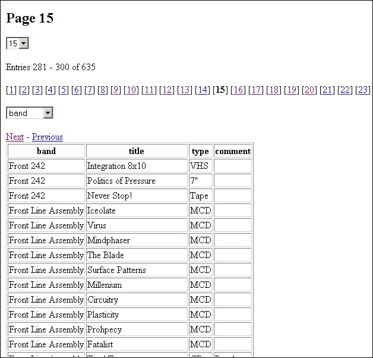

This abstract wrapper class provides easy and simple class methods to access
the most important db function.
Classes implementing the functionality for native PHP functions, PEAR,
PHPLIB, ADOdb and METABASE enables you to switch between these db abstraction
layers by changing only a single line of code.
Now you are able to use a unifed abstraction layer for database access and switch between the underlaying layers.
| ADODB | Metabase | PEAR | PHPLIB | additional anyDB wrapper | |
|---|---|---|---|---|---|
| DBX | x | ||||
| Frontbase | x | x | x | ||
| Informix | x | x | x | ||
| Interbase | x | x | x | ||
| Microsoft SQL | x | x | x | x | |
| Mini SQL | x | x | x | ||
| MySQL | x | x | x | x | x |
| Oracle 7 | x | x | |||
| Oracle 8 | x | x | x | x | |
| ODBC | x | x | x | ||
| PostgreSQL | x | x | x | x | x |
| Sybase | x | x | x | x | |
| SQLite | x | x | x | x |
With anyDB you can access all of them.
|
The latest version can always be found @ www.phpclasses.org.
Rate this class here... |
require_once '../anyDB.php';
require_once '../addon/DBHelper.php';
require_once '../addon/QueryHelper.php';
$database = 'lens';
$host = 'localhost';
$user = '';
$password = '';
$dbType = 'mysql';
$persistent = false;
// create a new db layer
$db = anyDB::getLayer('MYSQL','', $dbType);
//$db = anyDB::getLayer('PEAR', 'c:/php4/pear/', $dbType);
//$db = anyDB::getLayer('PHPLIB', '../../../inc/phplib-7.2d/', $dbType);
//$db = anyDB::getLayer('METABASE', '../../../inc/metabase/', $dbType);
//$db = anyDB::getLayer('ADODB', '../../../inc/adodb/', $dbType);
//connect to db
$db->connect($host, $database, $user, $password, $persistent);
// do something here
$db->free();
$db->disconnect();
echo $db->error;
In line 13 the 'mysql' database layer is selected. If you uncomment on of the lines 13 to 17 another layer is chosen.
In line 22 you can start accessing the database. Just insert one of the following examples.
// get the next result set
if ($db->query("SELECT name, email FROM users where id=2")) {
$res = $db->getNext();
echo implode(' - ', $res) . '<br>';
} else {
echo $db->error;
}
Output:
uschi - uschi@uschi.de
// get the next result and put it in a html table
if ($db->query("SELECT name, email FROM users where id=2")) {
$res = $db->getNext();
echo DBHelper::dumpNext($res, true);
} else {
echo $db->error;
}
Output:
| name | uschi |
|---|---|
| uschi@uschi.de |
// get the next result set as a numeric array
if ($db->query("SELECT name, email FROM users where id=2")) {
$res = $db->getNext(ANYDB_RES_NUM);
echo DBHelper::dumpNext($res, true);
} else {
echo $db->error;
}
Output:
| 0 | uschi |
|---|---|
| 1 | uschi@uschi.de |
// get the next result set as an array with numeric and associative entries
if ($db->query("SELECT name, email FROM users where id=2")) {
$res = $db->getNext(ANYDB_RES_BOTH);
echo DBHelper::dumpNext($res, true);
} else {
echo $db->error;
}
Output:
| 0 | uschi |
|---|---|
| name | uschi |
| 1 | uschi@uschi.de |
| uschi@uschi.de |
// get all results
if ($db->query("SELECT name, email FROM users")) {
$results = $db->getAll();
foreach ($results as $res) {
echo implode(' - ', $res) . '<br>';
}
} else {
echo $db->error;
}
Output:
peter - peter@peter.de
uschi - uschi@uschi.de
// get all the results with execute
$results = $db->execute("SELECT name, email FROM users");
foreach (@$results as $res) {
echo implode(' - ', $res) . '<br>';
}
Output:
peter - peter@peter.de
uschi - uschi@uschi.de
// get all the results and print them in a html table
$results = $db->execute("SELECT name, email FROM users");
echo DBHelper::dumpAll($results, true, array('Name','Email Adress'));
Output:
| Name | Email Adress |
|---|---|
| peter | peter@peter.de |
| uschi | uschi@uschi.de |
// get one column
if ($db->query("SELECT name FROM users")) {
$results = $db->getColumn();
foreach ($results as $res) {
echo $res . '<br>';
}
} else {
echo $db->error;
}
Output:
peter
uschi
// get all one column and print them in a table
if ($db->query("SELECT name FROM users")) {
$res = $db->getColumn();
echo DBHelper::dumpColumn($res, true, 'name');
echo '<br>';
echo DBHelper::dumpColumn($res, false, 'name');
} else {
echo $db->error;
}
Output:
| name | peter | uschi |
|---|
| name |
|---|
| peter |
| uschi |
// display a column in a select box
if ($db->query("SELECT name FROM users")) {
$res = $db->getColumn();
echo DBHelper::selectBox($res, 0, 'mybox');
}
Output:
// get a single value from the database
if ($db->query("SELECT count(*) FROM users")) {
$count = $db->getValue();
echo $count;
} else {
echo $db->error;
}
Output:
2
// insert data in the database
if ($db->query("INSERT INTO users (name, email) VALUES ('lennart','lennart@lennart.de')")) {
echo 'ok';
} else {
echo $db->error;
}
Output:
ok
// create a new page widget
require_once '../addon/PageWidget.php';
// widget settings
$entries = 2;
$table = 'users';
// which rows to display
$rows = array('name', 'email');
$widget = new PageWidget($db, 'mysqlLimitQuery', $table, $entries);
echo "<h2>Page $widget->page</h2>";
echo $widget->getPageDropdown();
echo "Entries $widget->start - $widget->end of $widget->total<p>";
echo '[' . $widget->getIndex('] [') .']<p>';
echo $widget->getOrderDropdown($rows);
echo $widget->getNextLink();
echo '<br>';
echo $widget->getPrevLink();
// get the data
echo DBHelper::dumpAll($widget->get($rows), true);
Output:
Example output (with more entries)

// get all tables
$tables = $db->getTables();
foreach ($tables as $table) {
echo $table . '<br>';
}
Output:
users
// export table content as csv data
$csv = Exporter::getTable($db, 'users', ANYDB_DUMP_CSV);
echo nl2br($csv);
Output:
id name login email
1 peter peter peter@peter.de
2 uschi uschi uschi@uschi.de
// export table content as sql statements
$sqlData = Exporter::getDB($db, ANYDB_DUMP_SQL);
foreach($sqlData as $key => $data) {
echo "$key<br>";
echo nl2br($data);
}
Output:
users
INSERT INTO users (id, name, login, email) VALUES ('1', 'peter', 'peter', 'peter@peter.de') ;
INSERT INTO users (id, name, login, email) VALUES ('2', 'uschi', 'uschi', 'uschi@uschi.de') ;
require_once '../addon/QueryHelper.php';
echo QueryHelper::insert('peter', array('a',4,2)) . '<br>';
echo QueryHelper::insert('peter', array('id' => 2,'name' =>'peter')) . '<br>';
echo QueryHelper::insert('peter', array('id' => 2,'name' =>"'peter'"), false) . '<br>';
echo QueryHelper::delete('peter', array('id'=>2,'name' =>'peter')) . '<br>';
echo QueryHelper::replace('peter', array('id' => 2,'name' =>'peter')) . '<br>';
echo QueryHelper::select(array('name', 'test'), 'peter', array('id' =>5,'test'=>'2'), true, 'LIMIT 10', 'DISTINCT') . '<br>';
echo QueryHelper::select(array('name', 'test'), 'peter', 'id=3', false, 'LIMIT 10') . '<br>';
echo QueryHelper::update('peter', array('name' =>'peter', 'id'=>4), 'id=10') . '<br>';
echo QueryHelper::update('peter', array('name' =>'peter', 'id'=>2), 'id=10', false) . '<br>';
Output:
INSERT INTO peter VALUES ('a', 4, 2)
INSERT INTO peter (id, name) VALUES (2, 'peter')
INSERT INTO peter (id, name) VALUES (2, 'peter')
DELETE FROM peter WHERE id=2, name='peter'
REPLACE INTO peter (id, name) VALUES (2, 'peter')
SELECT DISTINCT name, test FROM peter WHERE id=5, test='2' LIMIT 10
SELECT name, test FROM peter WHERE id=3 LIMIT 10
UPDATE peter SET name='peter', id=4 WHERE id=10
UPDATE peter SET name=peter, id=2 WHERE id=10